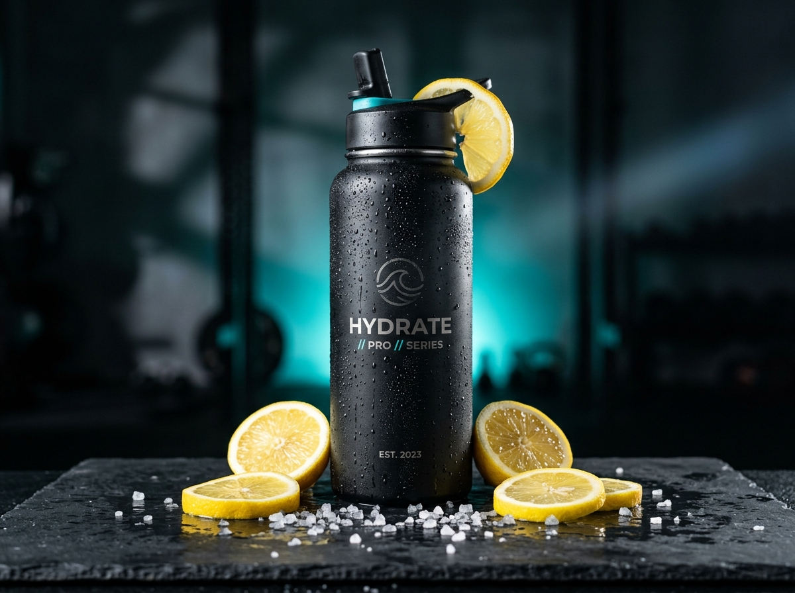

Precision Macro Fueling & Autonomic Recovery
Training breaks muscle tissue down. Fuel and restorative sleep build it back stronger. PulseForge closes the loop between dietary macronutrients and nervous system supercompensation.
Interactive Macro & Energy Ring Matrix
Tweak your training focus below and watch the metabolic rings adapt in real-time.

Smart Macro Periodization Strategies
Different training adaptations require distinct biochemical fuel substrates.
Anabolic Window Sync
40g whey/casein isolate + 60g high-glycemic carbohydrates consumed within 45 minutes of heavy resistance workouts optimizes mTOR signaling.
Carb-Cycling Cadence
High carbohydrate days align with double-threshold sessions, while deload days transition to anti-inflammatory monounsaturated fats.
Pre-Sleep Casein & Zinc
Slow-digesting micellar casein and zinc picolinate sustained amino acid delivery throughout deep delta wave REM phases.
Cellular Hydration & Osmolarity
A 2% drop in cellular fluid causes up to a 15% reduction in aerobic VO2 max. PulseForge tracks sweat rate coefficients, sodium loss, and magnesium absorption.

Clinical Micronutrient & Ergogenic Protocols
Every supplement in our protocol is backed by meta-analytic randomized controlled trials.
Creatine Monohydrate
5g daily saturation increases intramuscular phosphocreatine reserves by 20%, enhancing explosive anaerobic ATP recycling and brain cognitive stamina.
Magnesium Bisglycinate
Chelated high-bioavailability magnesium crosses the blood-brain barrier to bind GABA-A receptors, calming neuromuscular excitability before bed.
Tart Cherry Anthocyanins
Natural cyclooxygenase (COX-1/2) inhibition accelerates post-marathon isometric force recovery and reduces delayed onset muscle soreness.

The Science of Slow-Wave Restoration
95% of human growth hormone is secreted during Stage 3/4 Deep Slow-Wave Sleep (SWS). PulseForge calculates sleep debt, restlessness indices, and circadian phase alignment.
- ● Deep Sleep Target: > 1h 45m per night
- ● REM Cognitive Integration: > 2h 00m
- ● Resting Heart Rate Dip: > 15% drop from baseline
Decoding Heart Rate Variability (rMSSD)
The microsecond variance between consecutive heartbeats is your central nervous system dashboard.
Peak Readiness (85–100%)
Parasympathetic dominance. Nervous system primed for maximum neural load, PR attempts, and high-intensity intervals.
Adaptive Zone (65–84%)
Equilibrium maintained. Ideal for steady-state Zone 2 aerobic base building, hypertrophy volume, and active recovery.
Sympathetic Strain (<65%)
High systemic inflammation or neural fatigue. Prioritize thermal contrast protocols, low-glycemic fueling, and restorative sleep.
PulseForge recalculates your readiness score automatically every morning upon awakening.
Evidence-Based Recovery Protocols
Scientific timing, temperature, and duration for physical tissue repair.

Cold Water Immersion
Submerge in 10°C–12°C water for 3–5 minutes. Triggers profound vasoconstriction, lowers muscle core temperature, and boosts circulating dopamine by 250%.

Infrared Thermal Sauna
20 minutes at 80°C upregulates Heat Shock Proteins (HSP70), protecting cellular proteins against oxidative misfolding and promoting plasma volume expansion.

Myofascial Flossing
Targeted percussive therapy and dynamic mobility flossing breaks fascial adhesions and enhances venous blood return to accelerate metabolite clearance.
Weekly Autonomic Recovery Heatmap
Review the undulating balance of load vs supercompensation over the last seven days.
Elite Recovery Protocols from Head Coaches
Micro-adjustments that prevent systemic burnout during heavy training blocks.
Consuming large meals less than 3 hours before sleep forces cardiac output into digestive splanchnic circulation, artificially elevating nocturnal resting heart rate by 8–12 BPM.
Avoid cold water immersion within 4 hours of hypertrophy resistance training to protect inflammatory satellite cell proliferation; prioritize cold plunge on endurance days instead.
Drinking plain water without 500mg sodium during long sessions dilutes blood sodium, lowering neuromuscular transmission efficiency and triggering early cramps.
Performance Chef Nutrition Library
Four chef-crafted athletic meals calibrated for optimal macro distribution.

Wild Salmon Quinoa Bowl
Rich in Omega-3 EPA/DHA fatty acids for cell membrane fluidity and joint cartilage protection.

Tart Cherry Overnight Oats
Complex slow-digesting beta-glucans blended with high-antioxidant Montmorency tart cherry extract.

Filet Mignon & Roasted Yam
High bioavailable heme iron, carnosine, and zinc for red blood cell hemoglobin synthesis.

Chlorophyll Peptide Blend
Hydrolyzed collagen peptides, spirulina, and ginger root to accelerate connective tissue repair.
Synchronize Your Biometrics Today
Connect your devices or log your nutrition manually in our full SaaS application.